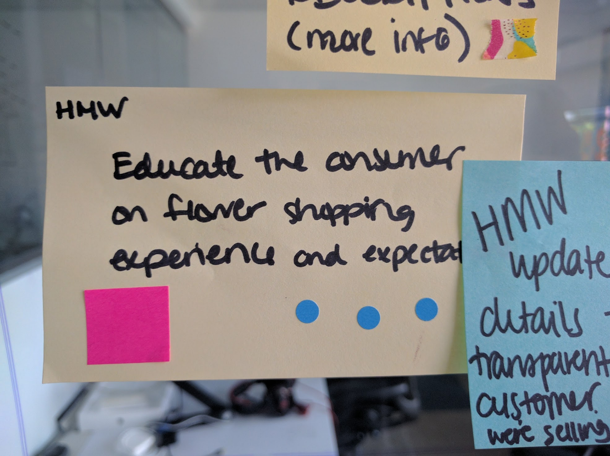

How might we improve a flower box delivery site?
Bloom Box Miami is a flower box delivery site that aims to make its shopping experience to be as simple, fresh, and fun as their flower boxes are. For this project, I joined a team of UX designers in evaluating what improvements we could make during a 5 day design sprint.
Team Members:
Kat Alderman
Denise Ortiz Rios
Carolina Lira
Isa Morales
Joshua Beauplan
What's the "Google Ventures Design Sprint?"
The sprint is a five-day process for answering critical business questions through design, prototyping, and testing ideas with customers. Learn more about it here!
To start, we gathered research — surveys, interviews, site analytics, and business & competitor information. We got a general idea of the business, its potential problems, its goals, and who its customers are in order to get started. We started with quantitative and qualitative research and a project brief that introduced us to this company and its current situation.
Day 1: Map
We began by mapping the new & returning customer experiences so that we better understood the current situation and all of the ways someone from Bloom Box could impact a touchpoint. This included even thinking about how the florist gets involved in putting together a box. Working with post-it notes allowed us to easily move steps around, and we just drew arrows on the glass wall to connect steps together.
Find Pain Points
We used our qualitative and quantititative data to find pain points in the current process. These pain points were used to generate our “How Might We?” questions for the sprint.
We generated concepts for goals we might want to approach building a solution for during our sprint. Starting with the phrase "How might we...", we completed the statement with questions reflective of the problems we'd found in our qualititative and quantitative data.
We then mapped the concerns we found to the customer experience to help determine what we should focus on for the sprint.
From this map, we determined our main task for the sprint: How might we educate the consumer on the flower shopping experience and expectations?
Day 2: Sketch
We generated quick sketches of proposed solutions for our sprint task by running a quick "Crazy Eights" exercise — which is where you divide a piece of paper into 8 sections and spend one minute sketching a solution to your problem in each panel. You can generate ideas for this by running a "Remix & Improve" session - each team member finds real examples of sites or businesses that have a solution in place for the problem you're trying to solve.
Day 3: Decide
Storyboard
We selected one of our sketches (that we felt best addressed the main problem) from the crazy eights exercise to move forward with. We then created a storyboard of the experience we wanted to create.
Decision Time!
We decided on our proposed solution to move forward with - our prototype would address changes to the product details page and the checkout in order to provide customers with a more clear explanation of what they are ordering and what they would receive.Day 4: Prototype
We assigned team roles: an asset collector (to get real images to be used in the prototype), a copywriter, a maker, a stitcher and an interviewer. You will all work to build the real working prototype. The maker will use Keynote, PowerPoint, Google Slides or any similar tool they’re comfortable with to create an experience that looks real, and the stitcher will link slides or hotspots together so that you can click through the presentation like it’s a real site. Walk through the final prototype as a team to make sure it makes sense and is ready for real user testing.
Day 5: Test
We showed our prototype to real people in order to get real feedback. To do this, we created an interview guide to help keep our user's feedback on track with what we wanted to find out. We then set up the interview with an introduction that let the person know they would be recorded (with Zoom) and that their feedback would be shared with the company anonymously.

While our interviewers worked with our users to test our prototype, the rest of the team took notes on items that stood out using colored post-it notes: green post-it notes symbolized positive remarks, orange for neutral remarks, and pink for things the user didn’t like or didn’t understand about our prototype.
We then took everyone’s notes and put them up on a wall to get them sort of organized into this giant mess:
Grouping or putting similar post-it notes on top of each other helped to organize the feedback and helped the real issues stand out. From here, we determined that our working prototype needed a little (ok, a lot) more work in order to finalize it for the client’s review.
The problem solving process we followed for this sprint really worked — we still had work to do at the end to clean things up, but the process of the sprint ensured everyone was heard when submitting their ideas — the loudest or most well spoken individual didn’t always win, and we used real customer data to drive our decisions.
Final Solution
More Resources
Our Final Keynote PrototypeThe Sprint Book
Zoom (Video Recording for User Testing)
Silverback (for Usability Testing)